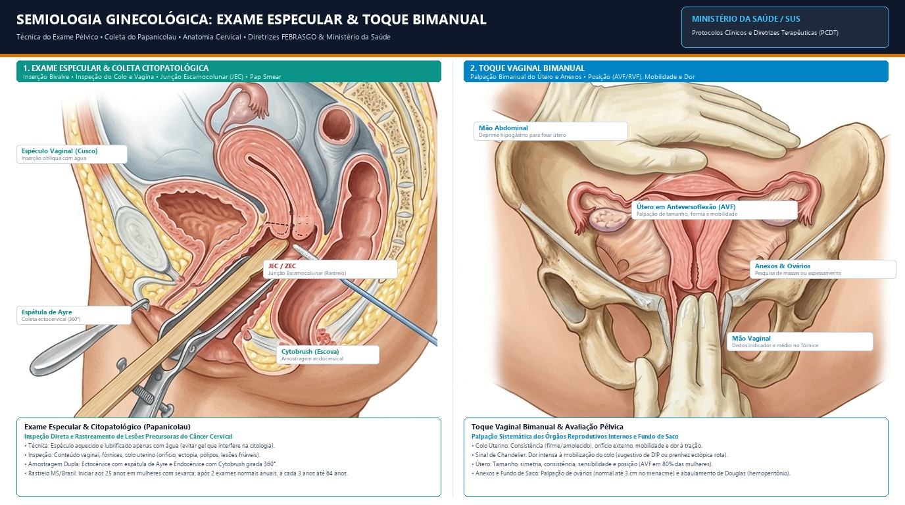

Portal 01
Base Essencial
Fundamentos em Ginecologia & Obstetrícia
Semiologia, Anatomia Pélvica, Exame Especular, Toque Bimanual e Segurança do Paciente
A porta de entrada do internato! Aprenda o passo a passo da anamnese ginecológica e obstétrica, técnica correta do exame especular, colheita citológica, avaliação de pelvimetria, índice de Bishop e barreiras de segurança cirúrgica.
Exame Especular & Toque
Índice de Bishop
Anatomia Pélvica
Segurança Queijo Suíço